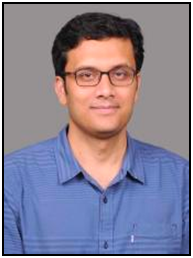
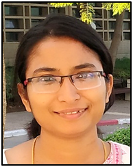

Dr. Ramesh Babu Thayyullathil
1975 BSc batch
MSc from Calicut University dept. PhD from City University,
New York. Worked at University of Maryland; PRL,
Ahmedabad; IPR, Gandhinagar and MG university.
Joined Cochin University of Science and Technology as faculty
member of physics dept. in 1992. Now Adjunct Professor there.
Research areas are Quantum Field Theory, Particle Physics,
Neutrino Oscillations.
Prof. Suresh Babu K
1978 BSc batch
MSc from Calicut University dept.
Joined Govt. College Madappally as faculty member of physics
dept. in 1982. Retired as Head of the Dept. in 2013.
Continues the teaching of physics.
Dr. Ramakrishnan P
1978 BSc batch
MSc from SB College, Changanassery. PhD from Cochin
University of Science and Technology.
Worked as faculty member at Payyannur College. Joined Govt.
College Madappally as faculty member of physics dept. in 1983.
Retired as Principal of the college in 2014.
Continues the teaching of physics.
Dr. Narayanan N K
1979 BSc batch
MSc from MG College, Trivandrum. PhD from Cochin
University of Science and Technology.
Worked as faculty member at NAS College, Kanhangad; Govt.
Brennen College, Thalassery; Govt. College Madappally and
Kannur University. Currently the Principal of the College of
Engineering, Vatakara.
The first research guide of the research centre of Physics Dept.
and produced three PhDs from here. Research areas are Digital
signal processing, Digital image processing.
Prof. Sasindran E
1978 BSc batch
MSc from MA College, Kothamangalam.
Worked as faculty member at NAS College, Kanhangad. Joined
Govt. College Madappally as faculty member of physics dept. in
1985. Retired from the dept. in 2012.
Prof. Abdunnur T V
1979 BSc batch
MSc from Farook College, Kozhiode.
Worked as faculty member at Govt. Brennen College. Joined
Govt. College Madappally as faculty member of physics dept. in
1985. Retired from the dept. in 2015.
Dr. Sunil Kumar R K
2002 PhD from this dept.
Joined Govt. College Madappally as faculty member of physics
dept. in 2014. Currently Assistant Professor at School of
Information Science and Technology, Kannur University. One of
the research guides of this dept.
Research areas are Digital signal processing, Digital image
processing

Dr. Lajish V L
1995 BSc batch, 2008 PhD from this dept.
Worked at TCS, Mumbai.
Currently Assistant Professor and Head of Dept. of Computer
Science at University of Calicut.
Research areas are Digital signal processing, Digital image
processing.
Dr. Yatheesh Vadakkeyakath
1995 BSc batch
MSc. (Tech.) Marine Geophysics from Cochin University of
Science and Technology. PhD from Goa University.
Postdoctoral fellow at Institut de Physique du Globe de Paris.
Currently Senior Scientist at CSIR – National Institute of
Oceanography, Goa.
Research areas are Marine Geophysics, Plate Tectonics,
Geodynamics.
Dr. Sudheesh C
1998 BSc batch
MSc and PhD from IIT-Madras.
Postdoctoral fellow at PRL, Ahmedabad; Weizmann Institute of
Science, Israel; IISc, Bangalore.
Joined Indian Institute of Space Science and Technology,
Trivandrum in 2010. Currently Associate Professor there.
Research areas are Nonlinear dynamics, Quantum information,
Quantum Optics.
Dr. Sivaji Purushothaman
1999 BSc batch
MSc from Cochin University of Science and Technology. M.Sc.
Experimental Physics from Utrecht University. PhD from
University of Groningen.
Worked as Experimental Physicist at Mapper Lithography.
Currently Staff scientist at GSI Helmholtz Centre for Heavy Ion
Research, Germany.
Research areas are Atomic collisions at relativistic energies,
Low energy radioactive ion beams.
Dr. Reshma Bhaskaran
1999 BSc batch
MSc, MPhil and PhD from University of Calicut. Diploma in
Radiation Physics from BARC, Mumbai.
Currently Assistant Professor ( Radiation Physics), Department of
Radiotherapy, Govt Medical College, Alappuzha.
Research areas are Background Radioactivity Analysis,
Clinical applications of Radiation.

Dr. Raghunath C G
Dr. Raghunath C G
2000 BSc batch
MSc from IIT-Madras. PhD from Max Planck Institute of
Colloids and Interfaces, Germany.
Postdoctoral fellow at Forschugszentrum Julich, Germany;
Brandeis University, USA; Harvard University, USA
Currently Assistant Professor at IIT-Bombay.
Research areas are Soft matter, Biophysics.
Dr. Suchand Sandeep C S
2001 BSc batch
MSc from IIT-Madras. PhD from RRI, Bangalore.
Postdoctoral fellow at Netherlands and Germany.
Currently Research Fellow, Singapore Centre for 3D Printing,
Nanyang Technological University, Singapore.
Research areas are Ultrafast spectroscopy, Nanophotonics,
Biomedical optics, Optoelectronics and Laser material processing

Ms. Remya Krishnan M
2002 BSc batch
MSc from IIT-Madras.
Currently Assistant Professor at Sree Narayana College, Kannur.
Pursuing her PhD in Materials Science.

Dr. Suchand Sangeeth C S
2003 BSc batch
MSc from IIT-Madras. PhD from IISc, Bangalore.
Postdoctoral fellow at National University of Singapore; Centre
for Nano and Soft matter Sciences, Bangalore.
Currently Assistant Professor at NIT-Calciut.
Research areas are Molecular electronics, Organic
semiconductors, Charge transport.
Dr. Jayakumar B
2004 BSc batch
MSc from IIT-Madras. PhD from National University of
Singapore.
Currently Assistant Professor at IIT-Palakkad.
Research areas are Spintronics, Low temperature transport studies
in high magnetic field, 2D materials (Experimental Condensed
Matter Physics)

Dr. Jemseena V
2009 MSc batch
PhD from IIT-Madras.
Currently Post-Doctoral Fellow at ICTS-TIFR Bangalore.
Research areas are Theoretical Biophysics, Soft matter, Statistical
Physics.
Dr. Neeraj K
2008 BSc batch
MSc from Cochin University of Science and Technology. PhD
from Technical University of Darmstadt, Germany.
Postdoctoral fellow at Technical University of Darmstadt.
Currently Postdoctoral fellow at Ludwigs-Maximilian University
of Munich.
Research areas are Preclinical proton therapy, Beam line
development.
Dr. Shijin Babu P
2008 BSc batch
MSc from IIT-Madras. PhD from University of Wuerzburg,
Germany.
Currently Staff Engineer, Seagate Technologies, UK
Ms. Bivitha T K
2008 BSc batch
MSc from Cochin University of Science and Technology.
Currently Assistant Professor at Sree Narayana College, Kannur.
Dr. Vaisakh V
2009 BSc batch
Integrated PhD from IISc, Bangalore.
Currently Postdoctoral Fellow at University of Alberta, Canada.
Research areas are Quantum Fluids, Cavity Opto-mechanics.

. Ananya G